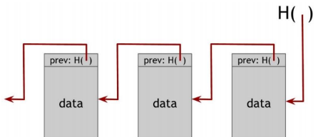

一、密码学原理
1.1 杂凑函数
①定义
杂凑函数（散列函数、哈希函数），能够把任意长度的输入消息映射成固定长度的输出消息。其函数计算模型表达式为：y = H(x) , {0,1}*->{0,1}
H(x)一般称为x的散列值、Hash值或信息摘要。
输出长度一般为128，160，192，256，384，512bits等。
②性质
快速性 任给一个值x，找到其散列值H(x)是容易的。
单向性（抗原性） 任给一个y=H(x)，找到其原值x是困难的。
弱抗碰撞 对于x1，寻找x2，使得H(x1)=H(x2)是困难的。
强抗碰撞 寻找两个值x1!=x2，使二者满足H(x1)=H(x2)是困难的。是容易的。
③抗碰撞杂凑函数
对于单项杂凑函数而言【单项杂凑函数：满足单向性的杂凑函数】
给定一个值M1，寻找M2使得H(M1)=H(M2)在计算上不可行，该单向杂凑函数被称为弱单向杂凑函数。
找到任意一对M，M'，M!=M'，H(M)=H(M')在计算上不可行，该单向杂凑函数被称为强单向杂凑函数。
④杂凑函数在区块链中的应用
1.数据规范化 将任意长度的消息输出为固定长度消息。

2.压缩函数 将任意长度的消息拆分成n个组，与杂凑初始化值IV一起作为压缩函数的输入。
3.哈希函数与数据结构
指示信息存储位置、提供信息检索功能、具备防篡改性质。
